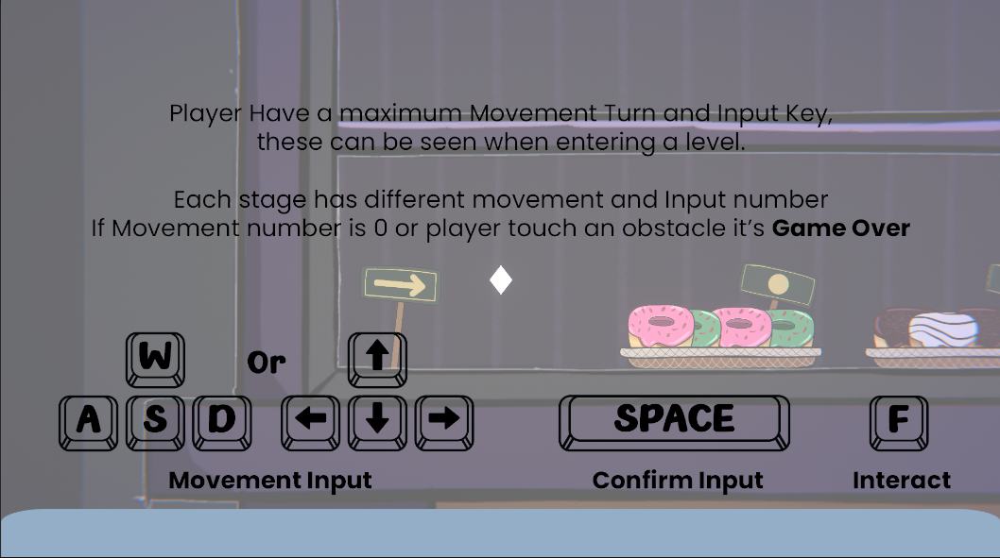
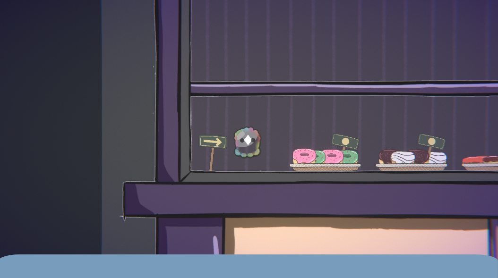
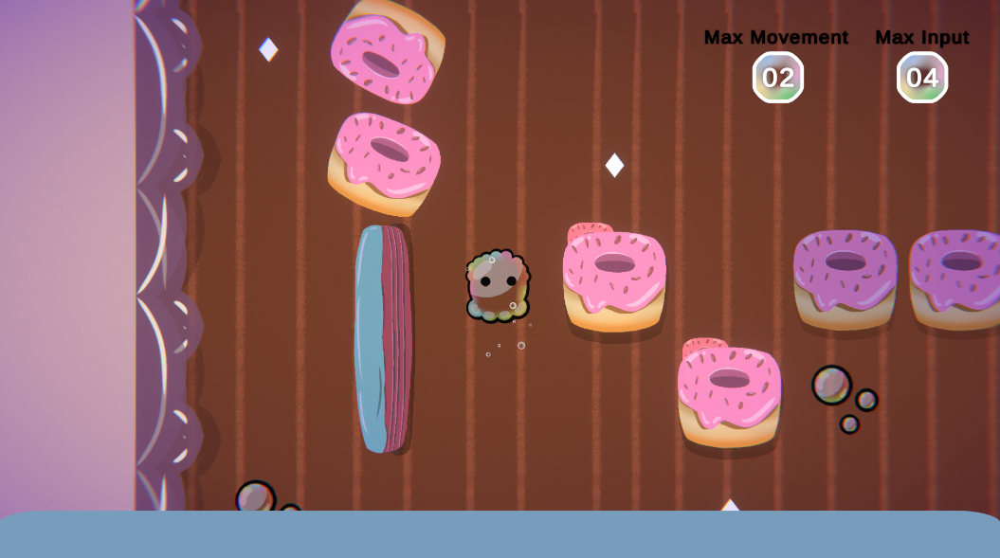
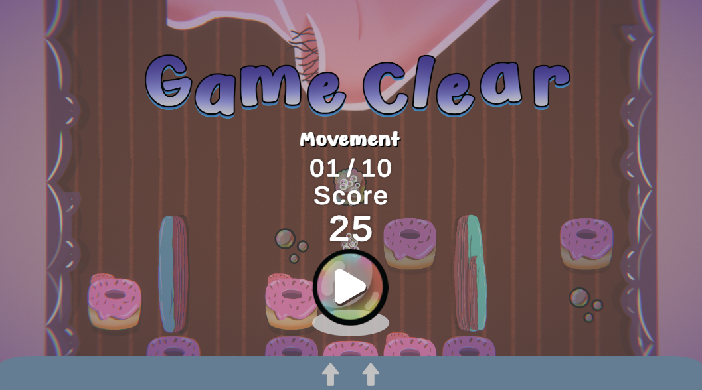
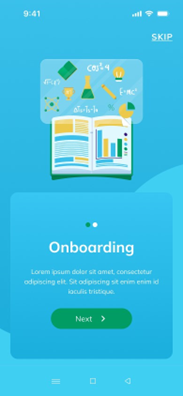
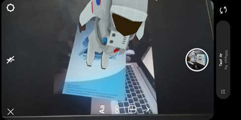

Courier's Conquest,
is a game where you are a delivery person in a world called Eldoria, you will encounter many challenges on your way to delivering goods, delivering goods to their destination safely and on time. In your free time, don't forget to fill your time by exploring the world of Eldoria, a world where ancient magic and modern life technology coexist. There are various mysterious things in it, and the more you explore it, the more mysteries you will know.
Mission, Deliver packages, defeat enemies, overcome obstacles and bring happiness to people.
Role:
Game Programmer
PIC Game Designer
Responsibility:
Design most of the Game Flow, Game Features, and few of Level Design.
Develop and Detailing most of the story, lore, quest, dialouge, etc.
PIC for the team designer
Working on Enemy AI
Working on Menu System
Project Created In: Agate Studi Independen Pengembang Game (Game Developer) | Kampus Merdeka Batch 6
Mitos Gunung Lawu,
is a Roguelite game that brings up the myth of Mount Lawu. This game focuses on a character who gets lost when he wants to climb Mount Lawu. The character will continue to climb Mount Lawu despite getting lost while encountering mythical phenomena on the mountain.
This game was made as part of my thesis/final project while in college.
Role:
Game Creator
Game Programmer
Game Designer
Responsibility:
Research about mythical of Gunung Lawu
Develop consept, story, lore based on mythical of Gunung Lawu.
Create level design, player handling, game features, game flow, etc.
Create the game with Unity Game Engine
Project Created For: Thesis/Final Project on college.
I Am Bubble




I Am Bubble,
is a game about fart that trying go up to the nose.
I Am Bubble won some awards from local jam site for Best Theme implementation, Best Overall Game, and Best Pitch.
After jam end, this team decide to continue development I Am Bubble outside of jam, and it is still in development today.
There have been some improvements in terms of mechanics, assets, and more after development outside of the local jam itself.
Role:
Game Programmer
Game Design
Responsibility:
Design and implementation system for obstacles, game over, checkpoint, and menu system.
Design and implementation new level stage.
Design and implementation new mechanic and movement.
Design and implementation level selector, paused menu, after game clear/failed.
Design and implementation UI System.
Project Created In: Global Game Jam Bogor 2025
Project still in development after jam until today.
The Final Limb,
is a game horror and gore that who focus on saving themselves.
When game start, you wake up as someone trap alone in this cold room with bom around your neck, and random voice order you to cut your own limb just to survive and finish the game.
Will you do it? or just abstain from it?
Role:
Game Programmer
Responsibility:
Help concept and designed the gameplay and game idea.
Do you like math? Or maybe rhythm games? If you enjoy both, then Math Dance might just refresh your memory
The Math Dance is rhythm game which is combined with math on it. You didnt just play click on some notes, but you must think the answer to make it success.
Role:
Game Programmer
Responsibility:
Help concept design and implementation the gameplay.
Help concept for Level Design.
Developed and implemented all game mechanics.
Developed and implemented UI System.
Integrated BGM and SFX.
Integrated and implemented VFX.
Handled all programming aspects of the game.
Project Created In: Mini Game Jam 183: Calculation
Mathwiz : Transforming Learning with Augmented Reality in Mathematics Education


MATHWIZ,
is a math learning application designed as an educational tool for university students. It focuses on enhancing interaction between students and lecturers, and is equipped with books and materials that can be accessed from anywhere. The app also features a 3D augmented reality visualization that can be viewed and interacted with via mobile devices.
This project is a professional project that I worked on during my internship at PT. Informatika Media Pratama.
Role:
Assistant Business Analyst
RnD Augmented Reality
Responsibility:
Research and Development about Augmented and implementation to application.
Copywriter SRS and some document.
Help Business Analyst/Lead for some task.
Project Created In: PT. Informatika Media Pratama as an Intern.